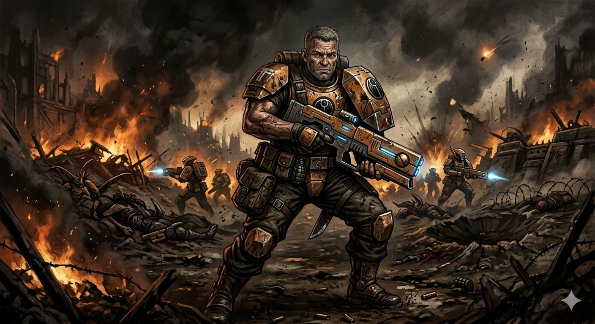
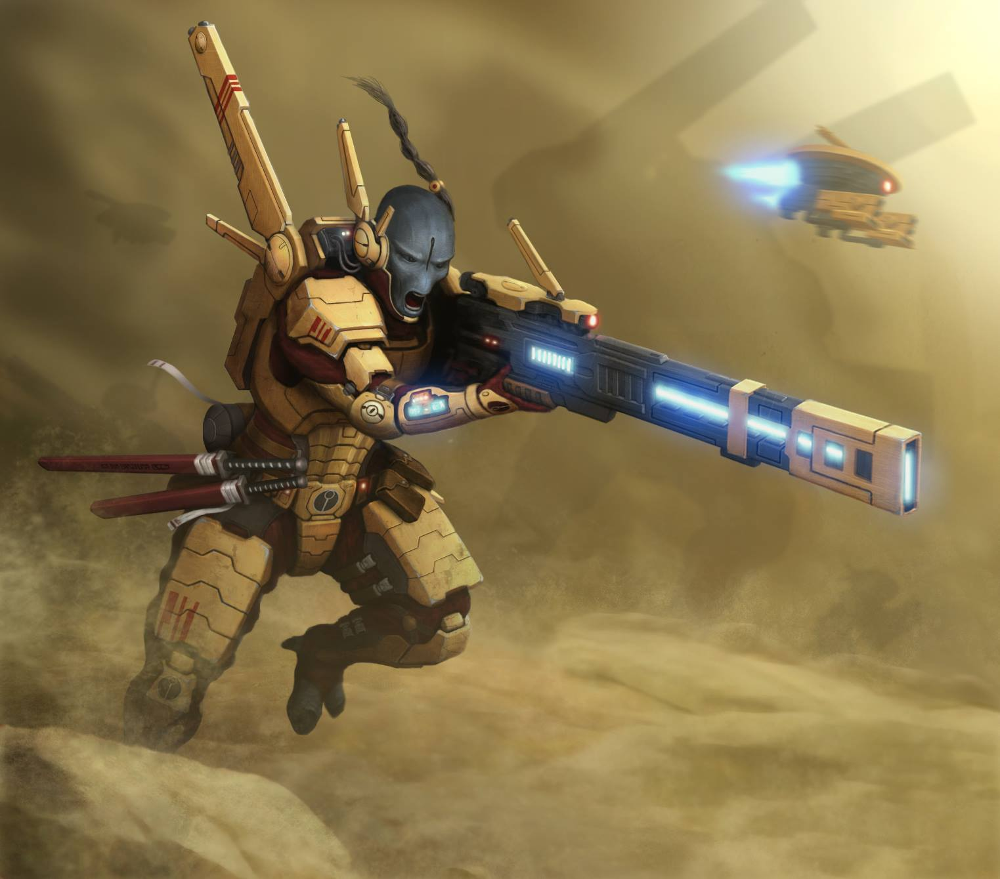
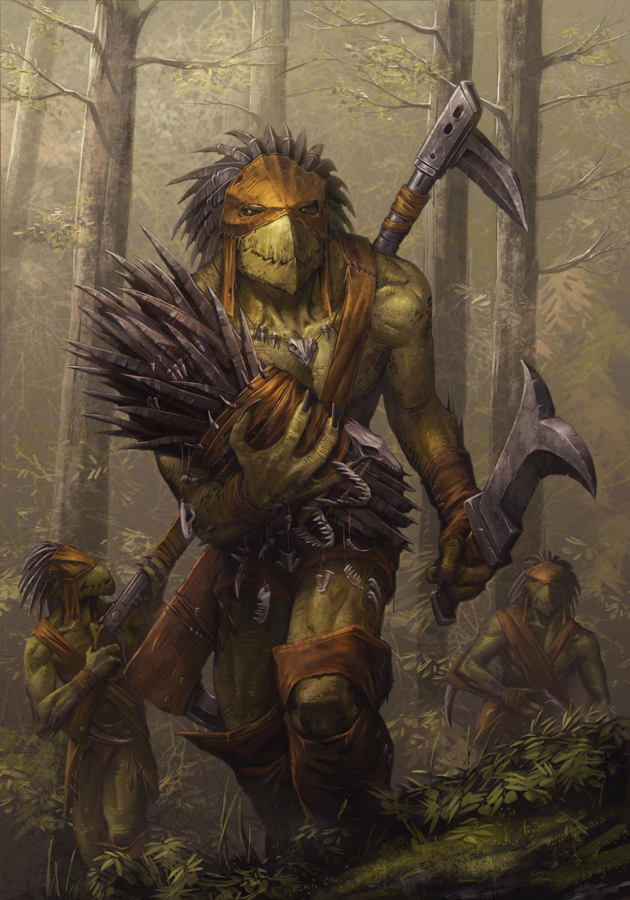
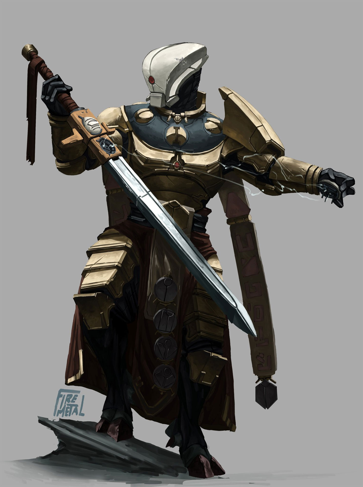
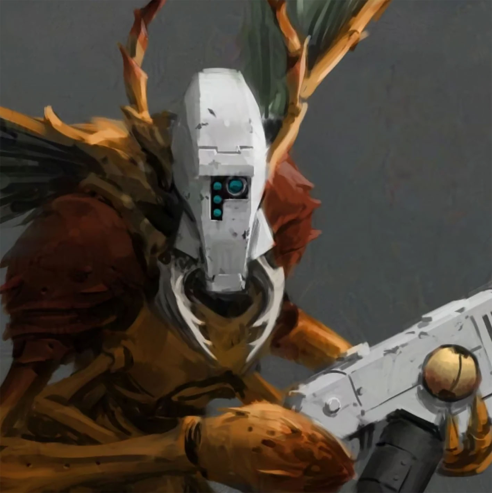
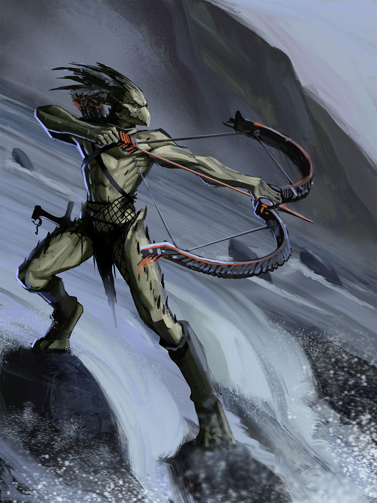
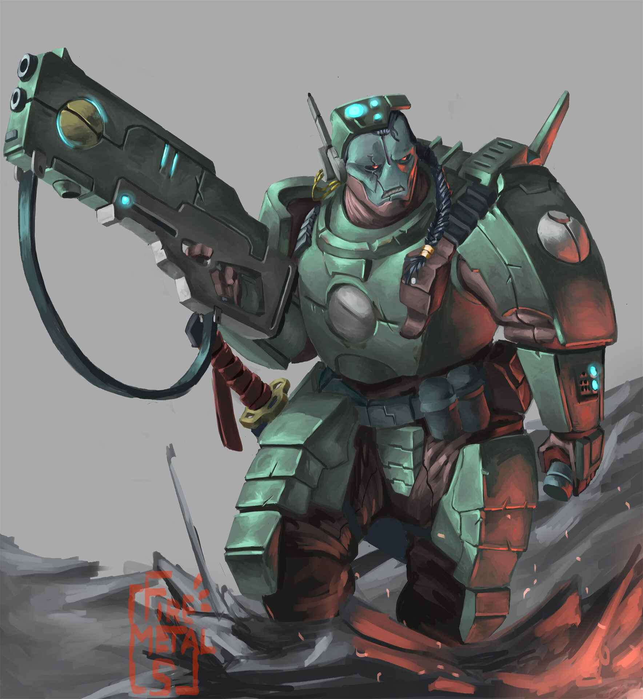
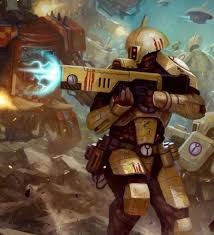
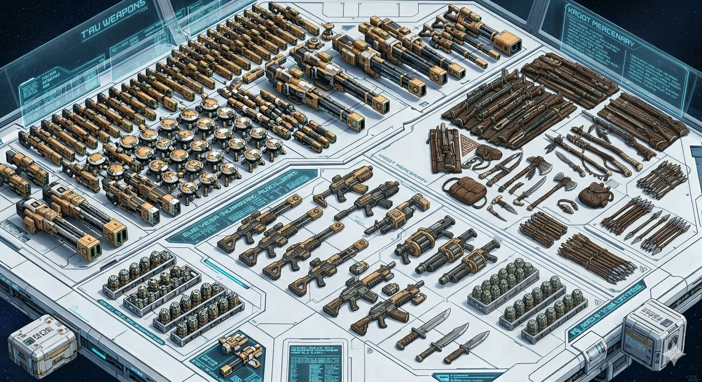
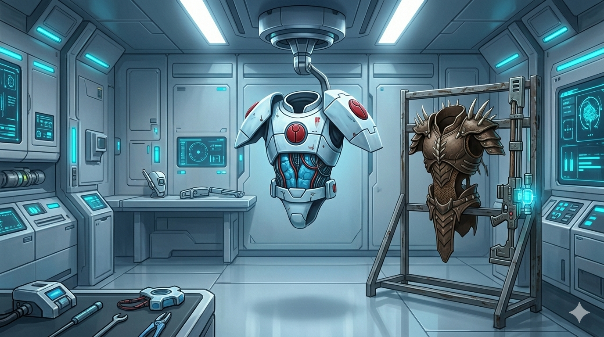

O Império T'au é uma força jovem e dinâmica, definida não pela biologia, mas pela filosofia do Bem Maior (Tau'va). Diferente de outras facções, os T'au são uma civilização multi-espécie onde cada raça — dos tecnológicos T'au aos ferozes Kroot — contribui com suas forças únicas. Eles lutam para expandir uma federação onde o progresso científico e a colaboração mútua são as leis soberanas. Para os T'au, a galáxia não precisa ser um lugar de trevas, mas um quebra-cabeça de civilizações esperando para serem unidas sob uma única e eficiente bandeira.

Guerreiros do Fogo

Pathfinders

XV8 Crisis Suit

XV88 Broadside

XV95 Ghostkeel

XV104 Riptide

Transporte Devilfish

Hammerhead Gunship

O arsenal desta facção é um testemunho de sua diversidade, unindo a ciência de ponta com o
instinto predatório. Na sua mesa de guerra, o contraste é evidente:
• Tecnologia de Pulso e Railguns: O ápice da engenharia T'au, focada em
precisão absoluta e desintegração de longo alcance. São armas limpas, eficientes e letais.
• Rifles Kroot e Armas de Haste: Representando os aliados mercenários,
essas armas utilizam tecnologia mais rústica, porém mortal. O Rifle Kroot, com suas lâminas
acopladas, é uma arma de fogo que se transforma em uma ferramenta de corte brutal para o combate
corpo a corpo.
• Sistemas Integrados: O poder real vem da combinação; enquanto os T'au
suprimem o inimigo com munição inteligente, os Kroot avançam entre as sombras com armamentos
balísticos tradicionais para o golpe final.

A defesa no Império T'au varia drasticamente dependendo de quem a utiliza,
refletindo os diferentes patamares tecnológicos da coalizão.
• Battlesuits e Geradores de Escudo: Os pilotos T'au confiam em exoesqueletos
de nanoliga e campos de força que os tornam quase invulneráveis ao fogo comum, priorizando a
proteção ativa e a mobilidade.
• Couros e Pinturas de Guerra: Em contraste, os aliados Kroot utilizam
proteções muito mais básicas, baseadas em couros reforçados e totens rituais. Sua 'armadura' é a
agilidade natural e a capacidade de usar o terreno a seu favor. Esta disparidade não é uma
fraqueza, mas uma escolha tática perfeitamente coordenada.